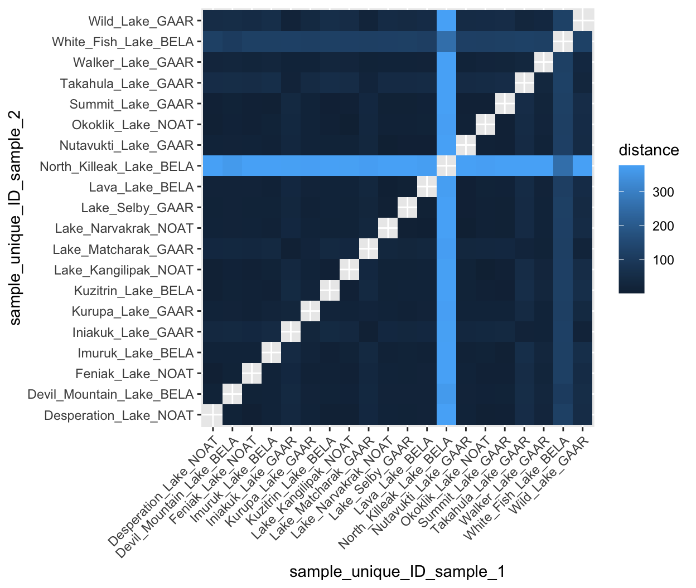
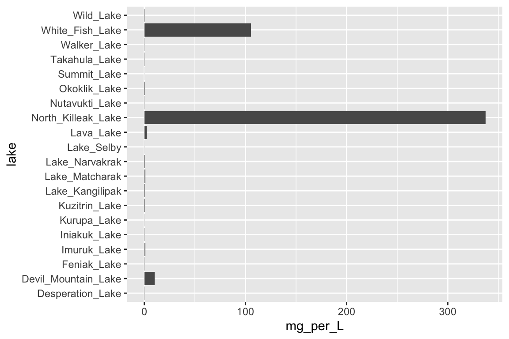

distances and scaling

Many of the analyses in the rest of this book start from one question: which samples are alike? A similarity network joins samples that are alike, hierarchical clustering merges them into a tree, k-means and dbscan sort them into groups, ordination methods such as MDS place them near one another on a plot, and matching an unknown GC-MS spectrum or retrieving a related protein from a library means finding the entry most like a query. Every one of those methods runs on a distance matrix: a table holding one number for every pair of samples that says how different the two are. This chapter is about building that matrix well, which comes down to two decisions that are easy to make by accident. Scaling decides which variables count. The distance metric decides what “similar” means. Neither choice has a single right answer, but both change the result, so both should be made on purpose.
distance matrices
A distance matrix compares every sample with every other sample across all of the measured variables at once, and boils each comparison down to a single number, as in the illustration at the top of this chapter. Small numbers mean similar samples.
First, we need our data set in wide format, with one row per sample and one column per variable:
alaska_lake_data %>%
select(-element_type) %>%
pivot_wider(names_from = "element", values_from = "mg_per_L") -> alaska_lake_data_wide
head(alaska_lake_data_wide)
## # A tibble: 6 × 15
## lake park water_temp pH C N P Cl
## <chr> <chr> <dbl> <dbl> <dbl> <dbl> <dbl> <dbl>
## 1 Devil_Mou… BELA 6.46 7.69 3.4 0.028 0 10.4
## 2 Imuruk_La… BELA 17.4 6.44 4.7 0.013 0 1.18
## 3 Kuzitrin_… BELA 8.06 7.45 2 0 0 0.67
## 4 Lava_Lake BELA 20.2 7.42 8.3 0.017 0.001 2.53
## 5 North_Kil… BELA 11.3 8.04 4.3 0.037 0.001 337.
## 6 White_Fis… BELA 12.0 7.82 12.3 0.034 0.006 105.
## # ℹ 7 more variables: S <dbl>, F <dbl>, Br <dbl>, Na <dbl>,
## # K <dbl>, Ca <dbl>, Mg <dbl>Now we can compute a distance matrix. Here is the traditional way, using base R:
dist(alaska_lake_data_wide[,3:15])
## 1 2 3 4 5
## 2 17.249885
## 3 13.914769 9.825572
## 4 18.650639 12.114748 17.376585
## 5 363.367406 375.484304 376.096169 372.814170
## 6 107.196874 119.469450 120.216457 116.204115 257.046356
## 7 39.939919 43.719116 42.365857 34.754470 375.000861
## 8 19.404912 21.984690 20.063580 18.697259 373.762458
## 9 35.533288 39.789532 38.784007 30.645412 372.279208
## 10 18.962699 14.634495 15.666485 10.483673 375.971844
## 11 18.453129 11.246167 14.445096 6.035171 375.825483
## 12 15.859597 8.463470 6.549584 14.247034 408.973609
## 13 53.990906 57.852872 56.692667 47.946077 375.976344
## 14 27.647239 27.763703 27.745856 19.099653 375.370523
## 15 53.952032 58.544454 57.044065 50.265090 375.483212
## 16 13.653806 15.851229 7.656391 19.617519 375.983281
## 17 14.509806 16.700167 10.740051 19.120889 375.673721
## 18 13.153727 13.931840 8.987793 15.893494 375.157921
## 19 18.520826 10.826147 14.818691 4.351309 375.348981
## 20 13.122339 13.918487 9.649135 14.221515 374.915449
## 6 7 8 9 10
## 2
## 3
## 4
## 5
## 6
## 7 121.114036
## 8 117.766213 26.564153
## 9 117.707763 7.201256 22.418984
## 10 119.608791 30.092744 10.637359 26.116748
## 11 119.365204 33.019096 15.336409 29.255482 5.952777
## 12 130.491702 41.856664 17.229544 37.778483 11.140371
## 13 125.047466 18.551858 43.715031 22.853050 45.370561
## 14 119.711970 17.822205 17.140450 15.116676 15.261002
## 15 124.815436 19.456110 38.576517 21.589961 44.248959
## 16 120.008119 37.645002 16.021790 34.347377 15.155177
## 17 119.635012 35.256225 12.522921 32.181857 13.699739
## 18 118.629445 37.805337 17.533849 34.070348 14.570844
## 19 118.831349 33.976175 16.986590 30.206181 7.697126
## 20 118.308513 35.461496 15.850232 31.733081 12.479645
## 11 12 13 14 15
## 2
## 3
## 4
## 5
## 6
## 7
## 8
## 9
## 10
## 11
## 12 10.180989
## 13 46.940423 57.993866
## 14 16.757819 25.552154 30.739429
## 15 48.524147 57.622278 27.204181 35.158036
## 16 16.018137 9.916751 52.513357 25.306954 51.656812
## 17 15.475985 10.697363 51.133725 23.902339 48.735302
## 18 14.167245 10.455806 52.153491 25.115004 52.172107
## 19 2.178394 11.082962 47.508028 17.698579 49.659940
## 20 12.209922 9.846948 49.759392 22.485011 50.153277
## 16 17 18 19
## 2
## 3
## 4
## 5
## 6
## 7
## 8
## 9
## 10
## 11
## 12
## 13
## 14
## 15
## 16
## 17 5.535921
## 18 7.313364 9.643066
## 19 16.910716 16.591947 14.272415
## 20 7.593005 9.322022 2.664249 12.413960We can also get distances directly from runMatrixAnalysis(), this course’s matrix-analysis function, by specifying analysis = "dist". The argument output_format = "long" asks for the distances as a long table, one row per pair of lakes, rather than as the compact triangle dist() printed above. The long shape is the one we usually want, because it can be filtered, sorted and plotted like any other tidy table, and because it is exactly the shape a network’s edge list needs.
alaska_dist_long <- runMatrixAnalysis(
data = alaska_lake_data_wide,
analysis = c("dist"),
output_format = "long",
scale_variance = FALSE,
columns_w_values_for_single_analyte = colnames(alaska_lake_data_wide)[3:15],
columns_w_sample_ID_info = c("lake", "park")
)
## Replacing NAs in your data with mean
head(alaska_dist_long)
## # A tibble: 6 × 7
## sample_unique_ID_sample_1 sample_unique_ID_samp…¹ distance
## <chr> <chr> <dbl>
## 1 Devil_Mountain_Lake_BELA Imuruk_Lake_BELA 17.2
## 2 Devil_Mountain_Lake_BELA Kuzitrin_Lake_BELA 13.9
## 3 Devil_Mountain_Lake_BELA Lava_Lake_BELA 18.7
## 4 Devil_Mountain_Lake_BELA North_Killeak_Lake_BELA 363.
## 5 Devil_Mountain_Lake_BELA White_Fish_Lake_BELA 107.
## 6 Devil_Mountain_Lake_BELA Iniakuk_Lake_GAAR 39.9
## # ℹ abbreviated name: ¹sample_unique_ID_sample_2
## # ℹ 4 more variables: lake_sample_1 <chr>,
## # park_sample_1 <chr>, lake_sample_2 <chr>,
## # park_sample_2 <chr>Because the long table is tidy, finding the samples most like a given sample is just a filter and a sort. These are the lakes closest to Lake Narvakrak:
alaska_dist_long %>%
filter(sample_unique_ID_sample_1 == "Lake_Narvakrak_NOAT") %>%
arrange(distance) %>%
head(3)
## # A tibble: 3 × 7
## sample_unique_ID_sample_1 sample_unique_ID_samp…¹ distance
## <chr> <chr> <dbl>
## 1 Lake_Narvakrak_NOAT Nutavukti_Lake_GAAR 2.18
## 2 Lake_Narvakrak_NOAT Lava_Lake_BELA 4.35
## 3 Lake_Narvakrak_NOAT Lake_Selby_GAAR 7.70
## # ℹ abbreviated name: ¹sample_unique_ID_sample_2
## # ℹ 4 more variables: lake_sample_1 <chr>,
## # park_sample_1 <chr>, lake_sample_2 <chr>,
## # park_sample_2 <chr>Let’s look at all the distances at once. Why is North Killeak Lake so distant from everyone? Wasn’t that lake the one with such high chloride?
plot1 <- ggplot(
alaska_dist_long,
aes(x = sample_unique_ID_sample_1, y = sample_unique_ID_sample_2, fill = distance)
) +
geom_tile() +
theme(axis.text.x = element_text(angle = 45, hjust = 1))
plot1
Figure: Pairwise distances between Alaskan lakes, computed on unscaled data. A heat map in which each tile is one pair of lakes, with lake names on both axes and fill color showing the euclidean distance between that pair across all thirteen measured variables. Light tiles indicate dissimilar pairs. Because the variables were not scaled before the distances were computed, the pattern is dominated by the single most abundant analyte. Data are the ‘alaska_lake_data’ dataset used in UMD CHEM5725.
scaling
Back to North Killeak Lake. Let’s look at the averages and spreads of each analyte, and then at chloride specifically:
alaska_lake_data %>%
group_by(element) %>%
summarize(
mean_mg_per_L = mean(mg_per_L),
sd_mg_per_L = sd(mg_per_L)
)
## # A tibble: 11 × 3
## element mean_mg_per_L sd_mg_per_L
## <chr> <dbl> <dbl>
## 1 Br NA NA
## 2 C 4.66 2.84
## 3 Ca 18.2 16.4
## 4 Cl 23.1 77.5
## 5 F NA NA
## 6 K 1.01 1.87
## 7 Mg 7.12 8.62
## 8 N 0.0382 0.0567
## 9 Na 12.6 37.1
## 10 P 0.0006 0.00135
## 11 S 5.21 7.03
Figure: Chloride abundance across Alaskan lakes. A bar chart showing the concentration of chloride (in mg per L, x-axis) in each of twenty Alaskan lakes (lake names on y-axis). Each bar is a single measurement of chloride in a single lake. North Killeak Lake stands out, and because chloride is measured in much larger numbers than the other analytes, this one lake and this one analyte dominate the unscaled distances above. Data are from the ‘alaska_lake_data’ dataset used in UMD CHEM5725.
Chloride is far more abundant than all the other elements, and North Killeak Lake has very high chloride. This means that the distances we computed above are essentially controlled by chloride, not by all elements equally. What if we want equal control? The fix is to scale each variable before computing distances: subtract the column’s mean and divide by its standard deviation. Every column then has a mean of 0 and a standard deviation of 1 (these are sometimes called z-scores), so a difference of one standard deviation counts the same whether it is in chloride, phosphorus, pH or water temperature. Base R’s scale() does it like this:
alaska_scaled <- scale(alaska_lake_data_wide[,3:15])
head(round(alaska_scaled, 2))
## water_temp pH C N P Cl S F
## [1,] -0.87 1.32 -0.44 -0.18 -0.44 -0.16 -0.65 0.80
## [2,] 1.29 -1.41 0.02 -0.44 -0.44 -0.28 -0.71 0.06
## [3,] -0.55 0.79 -0.93 -0.67 -0.44 -0.29 -0.70 -0.31
## [4,] 1.85 0.73 1.28 -0.37 0.30 -0.27 -0.66 0.80
## [5,] 0.10 2.08 -0.12 -0.02 0.30 4.05 -0.74 3.38
## [6,] 0.24 1.60 2.69 -0.07 3.99 1.06 -0.72 1.16
## Br Na K Ca Mg
## [1,] -0.22 -0.10 0.10 -0.76 -0.36
## [2,] -0.30 -0.30 -0.37 -1.05 -0.73
## [3,] -0.30 -0.31 -0.44 -1.00 -0.80
## [4,] -0.26 -0.26 -0.24 -0.39 -0.50
## [5,] 3.94 4.03 3.90 0.71 3.55
## [6,] 1.00 1.12 1.32 0.03 1.05runMatrixAnalysis() scales for us with scale_variance = TRUE, which is its default. Importantly, scaling is a choice, not a requirement. If every column is in the same units and the large values genuinely matter more, then leaving the data unscaled is a defensible choice. Some distance metrics, which we will meet below, also need the raw values and must not be scaled at all. But whenever the columns are measurements in different units, scale first.
runMatrixAnalysis(
data = alaska_lake_data_wide,
analysis = c("dist"),
output_format = "long",
scale_variance = TRUE,
columns_w_values_for_single_analyte = colnames(alaska_lake_data_wide)[3:15],
columns_w_sample_ID_info = c("lake", "park")
) %>% ggplot(
aes(x = sample_unique_ID_sample_1, y = sample_unique_ID_sample_2, fill = distance)
) +
geom_tile() +
theme(axis.text.x = element_text(angle = 45, hjust = 1)) -> plot2
## Replacing NAs in your data with mean
plot_grid(plot1, plot2, ncol = 1, labels = c("A", "B"))![The effect of scaling on a distance matrix. Two heat maps of the same twenty Alaskan lakes, with lake names on both axes and fill color showing the distance between each pair. A) Distances computed on the raw measurements, which are controlled almost entirely by chloride because chloride is reported in far larger numbers than the other analytes. B) Distances computed after every variable was centered and scaled to unit variance, so that a one-standard-deviation difference counts the same in every analyte. Data are from the 'alaska_lake_data' dataset used in UMD CHEM5725.](index_files/figure-html/unnamed-chunk-254-1.png)
Figure: The effect of scaling on a distance matrix. Two heat maps of the same twenty Alaskan lakes, with lake names on both axes and fill color showing the distance between each pair. A) Distances computed on the raw measurements, which are controlled almost entirely by chloride because chloride is reported in far larger numbers than the other analytes. B) Distances computed after every variable was centered and scaled to unit variance, so that a one-standard-deviation difference counts the same in every analyte. Data are from the ‘alaska_lake_data’ dataset used in UMD CHEM5725.
distance metrics
Everything so far has used euclidean distance, the straight-line distance between two points, extended to as many dimensions as there are variables. It is the default nearly everywhere, and for measurements in different units, once they are scaled, it is usually a sensible choice. But it carries assumptions: that every variable is a continuous number, that an absolute difference means the same thing anywhere on the scale, and that a value of zero is nothing special. When the data break those assumptions, euclidean distance can give a confident and wrong answer about which samples are alike. runMatrixAnalysis() offers several other metrics through its distance_method argument. Each one is a different definition of “similar”, and the sections below pair each with the kind of data it suits.
euclidean and manhattan
Euclidean distance squares each difference before adding them up (and then takes the square root of the total). Manhattan distance, also called city-block distance, simply adds up the absolute differences. The name comes from walking a city grid: the distance between two corners is the blocks walked east plus the blocks walked north, not the straight line through the buildings.
The squaring matters. Consider two pairs of samples. In the first pair, the samples differ by 1 unit in each of four variables. In the second, they differ by 4 units in one variable and not at all in the other three:
small_spread <- c(1, 1, 1, 1)
one_big <- c(4, 0, 0, 0)
tibble(
pair = c("small_spread", "one_big"),
euclidean = c(sqrt(sum(small_spread^2)), sqrt(sum(one_big^2))),
manhattan = c(sum(abs(small_spread)), sum(abs(one_big)))
)
## # A tibble: 2 × 3
## pair euclidean manhattan
## <chr> <dbl> <dbl>
## 1 small_spread 2 4
## 2 one_big 4 4Manhattan distance calls the two pairs equally different, since the total difference is 4 in both. Euclidean distance calls the second pair twice as far apart, because squaring rewards a single large difference over several small ones. Neither is wrong. But when one extreme value in one variable (a contaminated sample, an instrument spike) should not be allowed to decide which samples are alike, Manhattan distance is the more forgiving choice. It is requested with distance_method = "manhattan", and it should be scaled for the same reasons euclidean distance is.
correlation and cosine
Sometimes two samples have the same pattern across the variables but at different overall sizes. A diluted extract and a concentrated one, a small leaf and a large one, a long burn and a short one: the profile is the same, but every number in one sample is larger. Euclidean and Manhattan distances treat that size difference as dissimilarity. If the question is about the pattern, we want a metric that ignores size.
Correlation distance is 1 minus the Pearson correlation between two samples across all the variables (distance_method = "correlation"). Two samples whose values rise and fall together have a correlation near 1 and so a distance near 0, however different their totals are. Cosine distance (distance_method = "cosine") treats each sample as an arrow pointing out from the origin and measures the angle between two arrows: arrows pointing the same way are at distance 0 no matter how long they are. The two are close cousins. The difference is that correlation first subtracts each sample’s own mean, while cosine does not. Cosine is the standard choice for comparing the embeddings we will meet in the language model chapters, where each sample is described by hundreds of numbers and the direction of the arrow carries the meaning.
The wood_smoke data set holds the abundances of 254 compounds in smoke from six tree species, three hardwoods and three softwoods. The species produce different total amounts of smoke compounds:
wood_smoke %>%
group_by(wood_type, species) %>%
summarize(total_mg_g = sum(abundance_mg_g), .groups = "drop") %>%
arrange(total_mg_g)
## # A tibble: 6 × 3
## wood_type species total_mg_g
## <chr> <chr> <dbl>
## 1 softwood eastern_white_pine 209.
## 2 hardwood red_maple 240.
## 3 softwood eastern_hemlock 293.
## 4 hardwood paper_birch 346.
## 5 softwood balsam_fir 379.
## 6 hardwood northern_red_oak 424.Let’s ask which species is most like red maple, first by euclidean distance and then by correlation distance:
wood_smoke %>%
select(wood_type, species, compound, abundance_mg_g) %>%
pivot_wider(names_from = "compound", values_from = "abundance_mg_g") -> wood_smoke_wide
closest_to_red_maple <- function(method) {
runMatrixAnalysis(
data = wood_smoke_wide,
analysis = "dist",
distance_method = method,
scale_variance = FALSE,
output_format = "long",
columns_w_values_for_single_analyte = colnames(wood_smoke_wide)[-(1:2)],
columns_w_sample_ID_info = c("species", "wood_type")
) %>%
filter(sample_unique_ID_sample_1 == "red_maple_hardwood") %>%
arrange(distance) %>%
head(2)
}
closest_to_red_maple("euclidean")
## # A tibble: 2 × 7
## sample_unique_ID_sample_1 sample_unique_ID_samp…¹ distance
## <chr> <chr> <dbl>
## 1 red_maple_hardwood eastern_hemlock_softwo… 56.4
## 2 red_maple_hardwood paper_birch_hardwood 61.6
## # ℹ abbreviated name: ¹sample_unique_ID_sample_2
## # ℹ 4 more variables: species_sample_1 <chr>,
## # wood_type_sample_1 <chr>, species_sample_2 <chr>,
## # wood_type_sample_2 <chr>
closest_to_red_maple("correlation")
## # A tibble: 2 × 7
## sample_unique_ID_sample_1 sample_unique_ID_samp…¹ distance
## <chr> <chr> <dbl>
## 1 red_maple_hardwood northern_red_oak_hardw… 0.0177
## 2 red_maple_hardwood eastern_hemlock_softwo… 0.125
## # ℹ abbreviated name: ¹sample_unique_ID_sample_2
## # ℹ 4 more variables: species_sample_1 <chr>,
## # wood_type_sample_1 <chr>, species_sample_2 <chr>,
## # wood_type_sample_2 <chr>By euclidean distance, red maple’s nearest neighbor is eastern hemlock, a softwood whose main similarity to red maple is that it produces a similar total amount of smoke compounds. By correlation distance, the nearest neighbor is northern red oak, a fellow hardwood with a similar profile at a different overall level. Here, scaling is off on purpose: every column is in the same units (mg of compound per g of wood), and z-scaling each compound would let the hundreds of trace compounds count as much as the major ones.
abundance and composition data
A great deal of chemical and biological data records how much of each component a sample contains: compound abundances from GC-MS, percentages of each compound class in a wax, counts of each species in a sample. Two things make this kind of data awkward for euclidean distance.
The first is zeros. In abundance data, a zero usually means “not present”, and many samples share many zeros. Euclidean distance can produce a strange result here, sometimes called the abundance paradox. Consider three sites and three species:
paradox <- tibble(
site = c("site_1", "site_2", "site_3"),
species_A = c(0, 1, 0),
species_B = c(1, 0, 4),
species_C = c(1, 0, 4)
)
paradox
## # A tibble: 3 × 4
## site species_A species_B species_C
## <chr> <dbl> <dbl> <dbl>
## 1 site_1 0 1 1
## 2 site_2 1 0 0
## 3 site_3 0 4 4Sites 1 and 3 contain exactly the same species. Site 3 just has more of each. Site 2 shares no species at all with site 1. Yet euclidean distance says site 1 is closer to site 2:
runMatrixAnalysis(
data = paradox,
analysis = "dist",
distance_method = "euclidean",
scale_variance = FALSE,
output_format = "long",
columns_w_values_for_single_analyte = c("species_A", "species_B", "species_C"),
columns_w_sample_ID_info = "site"
) %>% filter(sample_unique_ID_sample_1 == "site_1")
## # A tibble: 2 × 3
## sample_unique_ID_sample_1 sample_unique_ID_samp…¹ distance
## <chr> <chr> <dbl>
## 1 site_1 site_2 1.73
## 2 site_1 site_3 4.24
## # ℹ abbreviated name: ¹sample_unique_ID_sample_2Bray-Curtis dissimilarity (distance_method = "bray_curtis") was built for this kind of data. It adds up the absolute differences between two samples and divides by the total amount in both, so it runs from 0 (identical) to 1 (nothing in common). A component absent from both samples adds nothing to either part of that fraction, so shared absences never make two samples look alike. On the same three sites, it puts site 1 with site 3, where it belongs:
runMatrixAnalysis(
data = paradox,
analysis = "dist",
distance_method = "bray_curtis",
scale_variance = FALSE,
output_format = "long",
columns_w_values_for_single_analyte = c("species_A", "species_B", "species_C"),
columns_w_sample_ID_info = "site"
) %>% filter(sample_unique_ID_sample_1 == "site_1")
## # A tibble: 2 × 3
## sample_unique_ID_sample_1 sample_unique_ID_samp…¹ distance
## <chr> <chr> <dbl>
## 1 site_1 site_2 1
## 2 site_1 site_3 0.6
## # ℹ abbreviated name: ¹sample_unique_ID_sample_2When each sample’s values are percentages that add up to 100, Bray-Curtis has a particularly plain reading: it is the fraction of the composition that the two samples do not have in common. The chemical_blooms data set records the percentage of each compound class in the leaf waxes of 78 plant species, and nearly three quarters of its entries are zero. Let’s compare two members of the mint family, Monarda fistulosa and Salvia apiana, with a stonecrop, Crassula perfoliata:
mint_comparison <- chemical_blooms %>%
filter(label %in% c("Monarda_fistulosa", "Salvia_apiana", "Crassula_perfoliata"))
mint_comparison
## # A tibble: 3 × 10
## label Alkanes Sec_Alcohols Others Fatty_acids Alcohols
## <chr> <dbl> <dbl> <dbl> <dbl> <dbl>
## 1 Monarda_… 0 0 0 12.5 37.6
## 2 Salvia_a… 0 0 0 16.4 10.7
## 3 Crassula… 9.81 0 0 22.8 30.9
## # ℹ 4 more variables: Triterpenoids <dbl>, Ketones <dbl>,
## # Other_compounds <dbl>, Aldehydes <dbl>
compare_waxes <- function(method) {
runMatrixAnalysis(
data = mint_comparison,
analysis = "dist",
distance_method = method,
scale_variance = FALSE,
output_format = "long",
columns_w_values_for_single_analyte = colnames(chemical_blooms)[-1],
columns_w_sample_ID_info = "label"
) %>% filter(sample_unique_ID_sample_1 == "Monarda_fistulosa")
}
compare_waxes("euclidean")
## # A tibble: 2 × 3
## sample_unique_ID_sample_1 sample_unique_ID_samp…¹ distance
## <chr> <chr> <dbl>
## 1 Monarda_fistulosa Salvia_apiana 40.6
## 2 Monarda_fistulosa Crassula_perfoliata 39.9
## # ℹ abbreviated name: ¹sample_unique_ID_sample_2
compare_waxes("bray_curtis")
## # A tibble: 2 × 3
## sample_unique_ID_sample_1 sample_unique_ID_samp…¹ distance
## <chr> <chr> <dbl>
## 1 Monarda_fistulosa Salvia_apiana 0.334
## 2 Monarda_fistulosa Crassula_perfoliata 0.404
## # ℹ abbreviated name: ¹sample_unique_ID_sample_2Euclidean distance calls Monarda very slightly closer to the stonecrop than to the other mint, largely because the two mints differ by about 30 percentage points in triterpenoids, and squaring makes that one large difference count heavily. Bray-Curtis puts the two mints together: they share about two thirds of their wax composition, whereas Monarda and the stonecrop share about 60%.
The second awkward feature is that percentages are not independent. If one component goes up, the others must go down, because the total is fixed at 100. Data with this property are called compositional, and the principled way to compare them is the Aitchison distance (distance_method = "aitchison"). It replaces each value with the logarithm of its ratio to the sample’s geometric mean, then takes the euclidean distance between the results. Working with ratios means a component going from 1% to 2% counts as much as one going from 20% to 40%: both doubled. And it means two samples in the same proportions are identical, whatever their totals. The catch is that the logarithm of zero is undefined. runMatrixAnalysis() replaces zeros with half the smallest positive value and says so, but in data as zero-heavy as chemical_blooms those stand-in values end up driving the result. Aitchison distance is the right tool for compositions in which most components are present in most samples (the major fatty acids of a set of seed oils, for example). For zero-heavy composition data, Bray-Curtis is the safer choice.
None of these three metrics can be used on scaled data. Bray-Curtis, Aitchison and the Jaccard distance below all need the raw, non-negative values, and scaling centers every column on zero, which produces negative numbers. runMatrixAnalysis() stops with a message if they are combined with scaling, so each of them needs scale_variance = FALSE.
presence and absence
Sometimes the amounts are not trustworthy or not interesting, and the only question is whether each thing is there: which compounds were detected, which genes are present in a genome, which species were seen at a site. For this, the Jaccard distance (distance_method = "jaccard") treats every value above zero as “present”, then compares the two sets: it is the number of things present in only one of the two samples, divided by the number present in either. Things absent from both are ignored, just as in Bray-Curtis. Here is the Jaccard distance between every pair of wood smoke samples:
runMatrixAnalysis(
data = wood_smoke_wide,
analysis = "dist",
distance_method = "jaccard",
scale_variance = FALSE,
columns_w_values_for_single_analyte = colnames(wood_smoke_wide)[-(1:2)],
columns_w_sample_ID_info = "species"
)
## red_maple northern_red_oak paper_birch
## northern_red_oak 0.4230769
## paper_birch 0.3902439 0.2602041
## eastern_white_pine 0.5177665 0.3956522 0.3679245
## eastern_hemlock 0.5226131 0.3584071 0.4394619
## balsam_fir 0.5023923 0.2969432 0.3616071
## eastern_white_pine eastern_hemlock
## northern_red_oak
## paper_birch
## eastern_white_pine
## eastern_hemlock 0.2009569
## balsam_fir 0.2286996 0.2117117The three softwoods are all within about 0.23 of one another: on which compounds their smoke contains at all, they are nearly interchangeable, and each of them is further from every hardwood than from the other two softwoods. Note that this is the default "wide" output format, a triangle like the one dist() printed at the start of the chapter.
concept check
Fill in the blank to compare the wood smoke samples on which compounds are present, ignoring how much of each there is. Press Run.
Self-check: two smoke samples contain exactly the same compounds, but every compound is ten times more abundant in one of them. What is their Jaccard distance?
mixed data types
Every metric so far needs numbers. Real data sets often mix numbers with categories: a habitat, a country of origin, a growth form, a yes or no. Gower distance (distance_method = "gower") handles the mixture. For each variable it computes a difference between 0 and 1: for a number, the absolute difference divided by that variable’s range, and for a category, 0 if the two samples match and 1 if they do not. The Gower distance is the average of those differences. Because each numeric variable is divided by its own range, Gower distance does its own scaling, so runMatrixAnalysis() leaves scale_variance out of it.
The hops_components data set describes 38 hop varieties by their oil and acid chemistry and by two categories: country of origin and brewing use (aroma, bittering or dry hopping). Let’s find the varieties closest to Chinook, first on chemistry alone and then on chemistry plus the two categories:
hop_chemistry <- c(
"total_oil", "alpha_acids", "beta_acids", "humulene",
"myrcene", "humulone", "caryophyllene", "farnesene"
)
closest_to_chinook <- function(columns) {
runMatrixAnalysis(
data = hops_components,
analysis = "dist",
distance_method = "gower",
output_format = "long",
columns_w_values_for_single_analyte = columns,
columns_w_sample_ID_info = "hop_variety"
) %>%
filter(sample_unique_ID_sample_1 == "Chinook") %>%
arrange(distance) %>%
head(3)
}
closest_to_chinook(hop_chemistry)
## # A tibble: 3 × 3
## sample_unique_ID_sample_1 sample_unique_ID_samp…¹ distance
## <chr> <chr> <dbl>
## 1 Chinook Nugget 0.0950
## 2 Chinook Millennium 0.104
## 3 Chinook Herkules 0.116
## # ℹ abbreviated name: ¹sample_unique_ID_sample_2
closest_to_chinook(c("hop_origin", "hop_brewing_usage", hop_chemistry))
## # A tibble: 3 × 3
## sample_unique_ID_sample_1 sample_unique_ID_samp…¹ distance
## <chr> <chr> <dbl>
## 1 Chinook Centennial 0.118
## 2 Chinook Nugget 0.176
## 3 Chinook Millennium 0.183
## # ℹ abbreviated name: ¹sample_unique_ID_sample_2On chemistry alone, Chinook’s nearest neighbor is Nugget. Once origin and brewing use count, it is Centennial, which like Chinook is an American variety used for dry hopping. Whether the categories should count is a decision about the question being asked, not something the metric can settle.
chapter summary
Two decisions go into every distance matrix. Scaling decides which variables count: scale measurements that are in different units so that no single variable dominates, and leave raw amounts unscaled when the metric needs them. The distance metric decides what “similar” means: the same size and values, the same pattern, the same composition, the same things present, or the same mix of measurements and categories. The flowchart and the table below summarize the choices.
Download this summary as a one-page PDF.

Figure: Choosing a distance metric. A decision flowchart that starts from what is in the columns of a data set and ends at a recommended value for the distance_method argument of runMatrixAnalysis, together with the matching scale_variance setting. Yellow boxes are questions about the data and green boxes are recommended metrics.
distance_method |
Similar means… | Typical data | Scale first? |
|---|---|---|---|
"euclidean" |
close values in every variable, with large single differences counting heavily | measurements in different units (pH, mg/L, temperature) | yes, when units differ |
"manhattan" |
close values in every variable, with one extreme difference counting less | as euclidean, when outliers or spikes are a concern | yes, when units differ |
"correlation" |
the same pattern across the variables, regardless of size | profiles at different concentrations or totals | optional |
"cosine" |
pointing in the same direction, regardless of length | embeddings and other high-dimensional data | optional |
"bray_curtis" |
sharing the same amounts of the same components | abundances and percentages, especially with many zeros | no |
"aitchison" |
the same proportions between components | compositions summing to 100% with few zeros | no |
"jaccard" |
containing the same things, amounts ignored | presence/absence, detected or not | no |
"gower" |
matching across a mix of numbers and categories | tables with categorical columns | handled internally |
further reading
Legendre and Gallagher (2001), Ecologically meaningful transformations for ordination of species data. The classic account of why euclidean distance misbehaves on abundance data (the abundance paradox above is their kind of example), and of which distances and transformations avoid the problem.
Gower (1971), A general coefficient of similarity and some of its properties. The original description of the Gower coefficient for data sets that mix numeric and categorical variables.
Greenacre (2021), Compositional data analysis. A readable review of why percentages and other parts-of-a-whole data need log-ratio methods such as the Aitchison distance, including a frank discussion of what to do about zeros.
Aggarwal, Hinneburg and Keim (2001), On the surprising behavior of distance metrics in high dimensional space. Shows how distances lose contrast as the number of variables grows, which is part of why direction-based measures such as cosine are favored for embeddings.